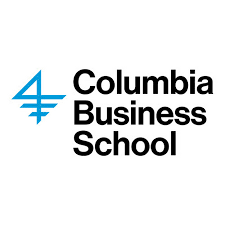
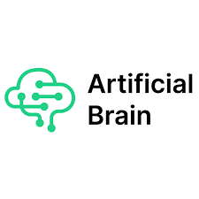
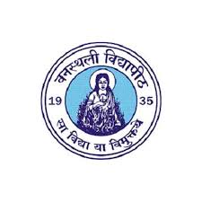

Machine Learning Engineer
IndustryApplied machine learning/AI and Research
Working in an applied research team on production-oriented machine learning systems in AI, cybersecurity, finance and quantum computing.
Machine Learning Engineer
Based in New York City
I am a machine learning engineer working in in AI and Tech, Quantum Tech, Finance and Cybersecurity, with a research background and graduated from Columbia University and earlier work across labs, startups, and applied engineering teams. My interests sit at the intersection of generative AI, natural language processing, biomedical machine learning, quantum computing and AI policy work.
About
Over the last several years, I have worked as a machine learning engineer and software engineer while also building a strong research base through Columbia, NTU, Artificial Brain, IIT Bombay, Graytitude, and other applied teams. My work has included LLM systems, explainable AI for DevOps, language model fine-tuning, medical imaging pipelines, quantum machine learning, recommendation systems, and analytics dashboards.
I am especially drawn to projects where modeling choices, data quality, evaluation, infrastructure, and user needs all have to be considered together. Outside of work, I enjoy tennis, reading, long walks, and conversations that start from a technical question and end somewhere unexpected.
Interests
Experience
Applied machine learning/AI and Research
Working in an applied research team on production-oriented machine learning systems in AI, cybersecurity, finance and quantum computing.
Machine Learning Engineer Intern | Explainable AI for Mainframe DevOps
Automated mainframe DevOps workflows by fine-tuning a Named Entity Reasoning model for structured log understanding, reducing troubleshooting time through faster root-cause identification and automated log explanations.
Graduate Research Assistant | Biomedical ML and Generative AI
Built an end-to-end multimodal story generation system by fine-tuning CLIP for visual question answering and GPT-2 for caption-conditioned context generation. Proposed a coherence evaluation metric and benchmarked BART, T5, and GPT-2 variants for creative content generation.
Developed an ML pipeline for Multiple Sclerosis biomarker prediction using 700+ T1/MRI image scans, 1,000+ radiomic features, and XGBoost for condition monitoring.

Machine Learning Engineer Intern | Venture Investment Analytics
Designed and deployed machine learning models to assess potential risks associated with venture investments and improve investor decision-making.
Incorporated sentiment analysis to evaluate startup viability using data from sources including Crunchbase and LinkedIn, enabling a more nuanced view of market sentiment around investment opportunities.
Contributed to an analytics dashboard that integrated ML models, annotated data, historical performance metrics, and broader startup evaluation signals.
Used pattern analysis and predictive analytics to provide investors with actionable insights for investment decision workflows.
Research Assistant | Language Models
Fine-tuned GPT-2 with LoRA and built a question-answering task pipeline for Llama using the WebNLG dataset.
Research Intern | Natural Language Processing
Worked with Dr. Erik Cambria's NLP group on sentiment analysis for personality detection using tweets, SenticNet data, BERT, and recurrent neural classifiers.
Software Developer Intern
Implemented an ensemble model using SVM, KNN, and Random Forest with 93.3% accuracy to classify noisy real-time waste data into recyclable categories, then integrated the model with a React analytics dashboard serving 9k+ users.
Designed PostgreSQL schemas and ingestion triggers, cutting manual intervention by half for data-driven processing and analysis workflows.

Software Engineering Intern
Contributed to quantum software tooling, hybrid quantum CNN experiments, quantum reinforcement learning, and a published Android application.
Education
Master of Science in Computer Science | Machine Learning
Coursework included Applied Machine Learning, Cloud Computing & Big Data, Databases, Artificial Intelligence, Natural Language Processing, and Data Driven Design. Teaching assistant for Applied Machine Learning and NLP.

Bachelor of Technology in Computer Science and Engineering
Projects
Cloud + NLP
Led a team building a serverless, microservice-driven dating web app for college students with 500+ profiles stored in DynamoDB.
Implemented a BERT-based matching pipeline using cosine similarity and keyword extraction for candidate recommendations.
Used AWS S3, API Gateway, Lambda, OpenSearch, and SQS; containerized and deployed the application on Kubernetes with Docker, autoscaling, health monitoring, rolling updates, and alerts.
Reinforcement Learning
Trained a self-driving car in the CARLA simulator using a DQN-based reinforcement learning approach.
Improved car control and safe navigation through imitation learning and SARSA, reducing training loss by 5% compared with the baseline.
NLP
Implemented bigram and trigram HMM models for POS tagging and evaluated generated sentence structure with dependency parsing.
Quantum Algorithms
Developed a quantum sorting approach for integer arrays using Toffoli gates and authored related hybrid quantum algorithm work.
Quantum ML
Led a nine-person team benchmarking hybrid quantum CNN models across IBM Quantum, Rigetti, and AWS quantum processors.
Education Technology
Created a Flask-based course recommendation platform backed by PostgreSQL schema design and real course data.
Skills
Contact
Best reached by email for collaborations, roles, and technical conversations.